Is there a simple way to include them?
2026-10-07
The contact interaction is regulated by a hard cutoff \Lambda,
\langle \vec p\,' | \hat V_\delta | \vec p \rangle = \frac{4\pi a(\Lambda)}{m}\,\theta(\Lambda - p')\,\theta(\Lambda - p) \, ,
where a(\Lambda) is tuned to reproduce the T-matrix at threshold,
a(\Lambda) = \frac{a_0}{1 - \tfrac{2}{\pi} a_0 \Lambda} \, ,
and a_0 is the physical s-wave scattering length.
Because this interaction is separable, the bubble sum can be summed geometrically to give
\begin{aligned} T(\vec p, -\vec p; E) &= \frac{4\pi a(\Lambda)/m}{1 - \tfrac{4\pi a(\Lambda)}{m}\int\! \tfrac{d^3 q}{(2\pi)^3}\, \tfrac{1}{E - q^2/m + i\varepsilon}} \\[4pt] &= \frac{4\pi a(\Lambda)/m}{1 - \tfrac{2 a(\Lambda)}{\pi}\int\! dq\, \tfrac{q^2}{mE - q^2 + i\varepsilon}} \\[4pt] &= \frac{4\pi/m}{\tfrac{1}{a(\Lambda)} - \tfrac{2}{\pi}\int_0^\Lambda\! dq \left(\mathcal{P}\tfrac{q^2}{mE - q^2} - i\pi q^2 \delta(mE - q^2)\right)} \end{aligned}
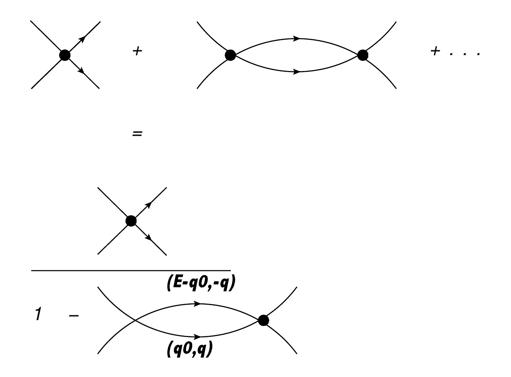
The bubble sum using the contact interaction.
\begin{aligned} \frac{1}{a(\Lambda)} &- \frac{2}{\pi}\int_0^\Lambda\! dq \left(\mathcal{P}\tfrac{q^2}{mE - q^2} - i\pi q^2 \delta(mE - q^2)\right) \\[4pt] &= \frac{1}{a(\Lambda)} + \frac{2}{\pi}\left(\Lambda - \tfrac{\sqrt{mE}}{2}\log\Big(\tfrac{\Lambda + \sqrt{mE}}{\Lambda - \sqrt{mE}}\Big) + i\tfrac{\pi}{2}\sqrt{mE}\right) \\[4pt] &= \frac{1}{a_0} - \frac{\sqrt{mE}}{\pi}\log\Big(\tfrac{\Lambda + \sqrt{mE}}{\Lambda - \sqrt{mE}}\Big) + i\sqrt{mE} \, . \end{aligned}
Plugging this back in gives
\begin{aligned} T(\vec p, -\vec p; E) &= \frac{4\pi/m}{\tfrac{1}{a_0} - \tfrac{\sqrt{mE}}{\pi}\log\Big(\tfrac{\Lambda + \sqrt{mE}}{\Lambda - \sqrt{mE}}\Big) + i\sqrt{mE}} \\[4pt] &\approx \frac{4\pi/m}{\tfrac{1}{a_0} + i\sqrt{mE} - \tfrac{2mE}{\pi}\tfrac{1}{\Lambda} + O(\Lambda^{-2})} \, . \end{aligned}
At threshold one recovers the correct normalization, T(\vec 0, \vec 0; E=0) = 4\pi a_0/m.
Assuming the existence of a bound state E=-B, one gets the familiar result from the pole of the amplitude: B=\frac{1}{ma_0^2}.
Within a finite cubic volume of size L^3, the analog of the denominator evaluated above is
\begin{aligned} \frac{1}{a(\Lambda)} - \frac{4\pi}{m}\frac{1}{L^3}\sum_{\vec n}^{2\pi n < \Lambda L}\frac{1}{E - \tfrac{4\pi^2 n^2}{m L^2}} &= \frac{1}{a(\Lambda)} - \frac{1}{\pi}\frac{1}{L}\sum_{\vec n}^{2\pi n < \Lambda L}\frac{1}{\epsilon - n^2} \\[4pt] &= \frac{1}{a_0} - \frac{2}{\pi}\Lambda - \frac{1}{\pi}\frac{1}{L}\sum_{\vec n}^{2\pi n < \Lambda L}\frac{1}{\epsilon - n^2} \, , \end{aligned}
where I define \epsilon = \dfrac{E m L^2}{4\pi^2}.
\Lambda above has dimension of inverse length. Moving to a dimensionless definition of \Lambda,
\Lambda \to \frac{2\pi}{L} \Lambda\, ,
we now have1
\frac{1}{a_0} - 4\frac{\Lambda}{L} - \frac{1}{\pi}\frac{1}{L}\sum_{\vec n}^{n < \Lambda}\frac{1}{\epsilon - n^2} = \frac{1}{a_0} - \frac{1}{\pi L}\left(\sum_{\vec n}^{n < \Lambda}\frac{1}{\epsilon - n^2} + 4\pi\Lambda\right) \, ,
which we can rewrite as
-\frac{1}{a_0}=\frac{1}{\pi L}\lim_{\Lambda \to \infty}\left(\sum_{\vec n}^{n < \Lambda}\frac{1}{n^2-\epsilon} - 4\pi\Lambda\right)\equiv \frac{1}{\pi L}S\left(\epsilon\right) \tag{1}
and the RHS is now Lüscher’s formula. In particular, values of \epsilon that satisfy this equality correspond to the eigen-energies of the two-particle interacting system.
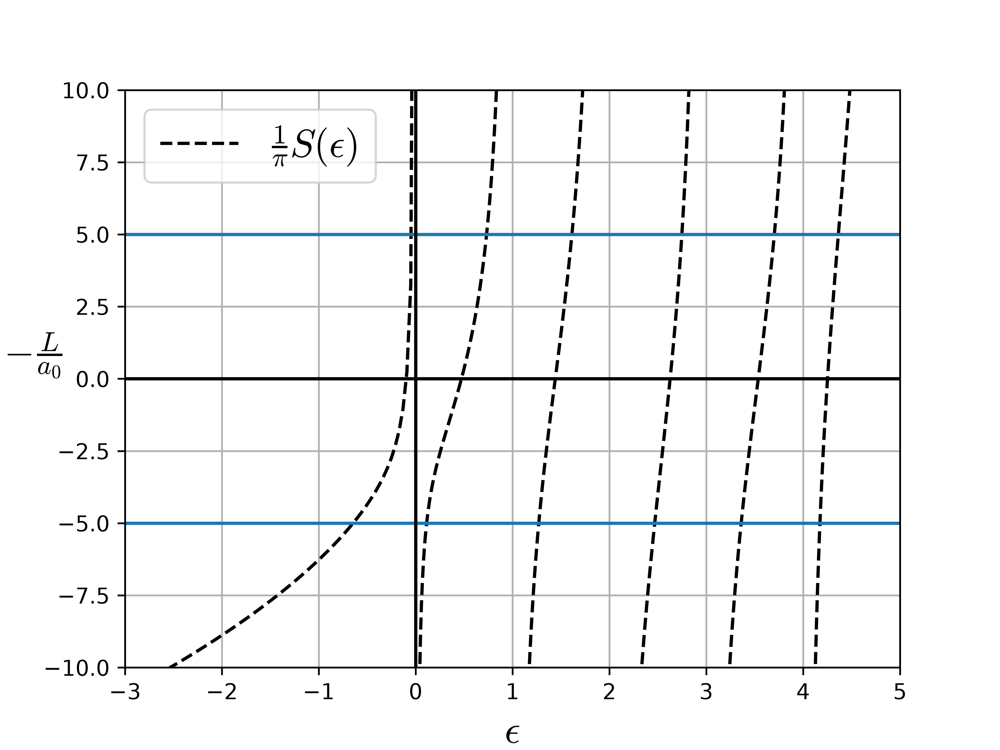
To obtain the full model-independent Lüscher formula, the idea is to generalize the potential
\langle \vec p\,' | \hat V | \vec p \rangle = \theta(\Lambda - p')\left(C_0(\Lambda)+C_2(\Lambda)\frac{p'^2+p^2}{2}+\ldots\right)\theta(\Lambda - p) \, ,
where the coefficients C_i(\Lambda) are tuned such that the scattering amplitude gives the correct physical phase shift \delta,
T(\vec p,-\vec p;E) = -\frac{4\pi}{m}\frac{1}{p\cot\delta - ip}
When we repeat the calculation in a finite volume with this potential, it leads to the full Lüscher formula
p\cot\delta = \frac{1}{\pi L}S(\epsilon)\ . where \epsilon is defined as before.
Note
For detailed derivations see
and of course the original sources by Lüscher (Warning!! Hard to understand!!)
I assume a Hamiltonian with potential of the form
\langle \vec p' | \hat V | \vec p \rangle = V(p',p) = \frac{2\pi C_0}{\mu} f(p') f(p) f(p) = \exp\left(-\frac{\pi (p r)^2}{32}\right) C_0^{-1} = \frac{1}{a_0} - \frac{4}{\pi r} \, ,
This is a separable potential with parameters chosen such that
p \cot\delta(p) = \frac{1}{f(p)^2}\left(-\frac{1}{a_0} + \frac{2p}{\sqrt\pi} F\!\left(\tfrac{1}{4} p \sqrt\pi r\right)\right) \approx -\frac{1}{a_0} + \frac{r}{2} p^2 - \frac{r^3}{48} p^4 + \mathcal{O}(p^6)
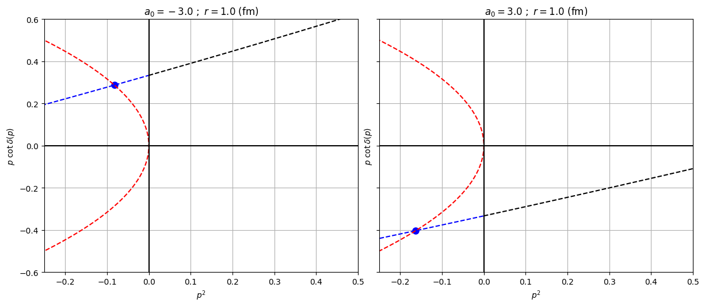
In a box of side length L, the eigenenergies E can be obtained by solving the following transcendental equation
-\frac{L}{a_0} + \frac{4L}{\pi r} = \frac{1}{\pi} \sum_{\vec n \in \text{B.Z.}} \frac{f(\vec n)^2}{\vec n^2 - \epsilon} \, ,
with \epsilon = \dfrac{E mL^2}{4\pi^2} and f(\vec n) = \exp\left(-\dfrac{\pi^3 r^2}{8 L^2} \vec n^2\right). I assume the two particles have equal mass m.
Given \epsilon, I insert this into Lüscher’s formula to get the phase shift
p\cot\delta(p) = \frac{1}{\pi L} S(\epsilon)
where
S(\epsilon) = \lim_{\Lambda \to \infty} \left[ \sum_{\vec n}^{n < \Lambda} \frac{1}{n^2 - \epsilon} - 4\pi\Lambda \right]
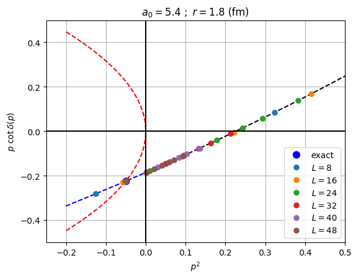
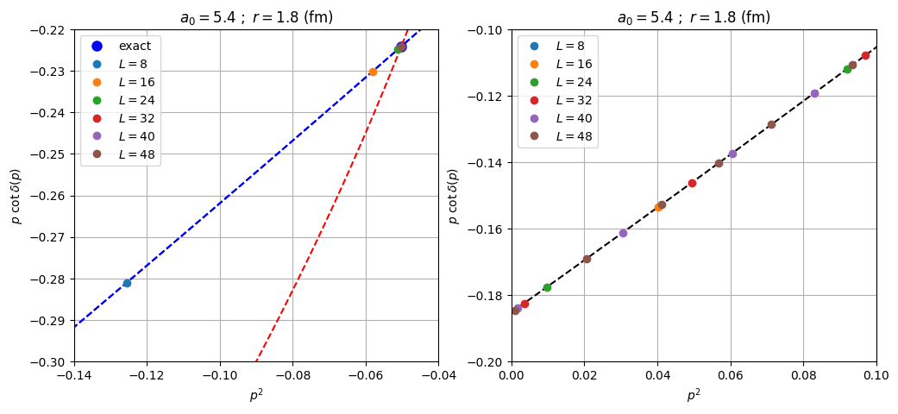
Can be shown that the location of the bound state depends exponentially on L
E_{-1}(L) = -\frac{\gamma^2}{m}\left(1 + \tfrac{12}{\gamma L}\, \tfrac{e^{-\gamma L}}{1 - 2\gamma(p\cot\delta)'} + \dots \right) \approx -\frac{\gamma^2}{m}\left(1 + \tfrac{12}{\gamma L}\, \tfrac{e^{-\gamma L}}{1 - \gamma r} \right)
Here I define p = i\gamma
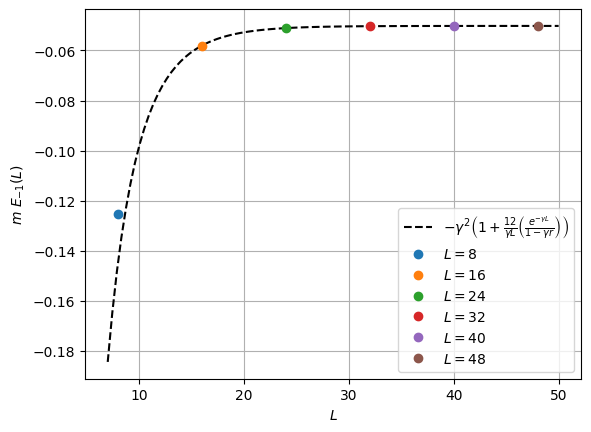
Note
Lowest scattering state has polynomial dependence on L:
\scriptsize \begin{aligned} E_0(L) = \frac{4\pi a_0}{m L^3}\Big(&1 + 2.8372974794806\,\tfrac{a_0}{L}\\ &+ 6.375183165675\left(\tfrac{a_0}{L}\right)^2 \\ &+ 8.311950724058\left(\tfrac{a_0}{L}\right)^3 + 2\pi\,\tfrac{a_0^2 r}{L^3} + \dots\Big) \end{aligned}
Note: m E_0 = p^2
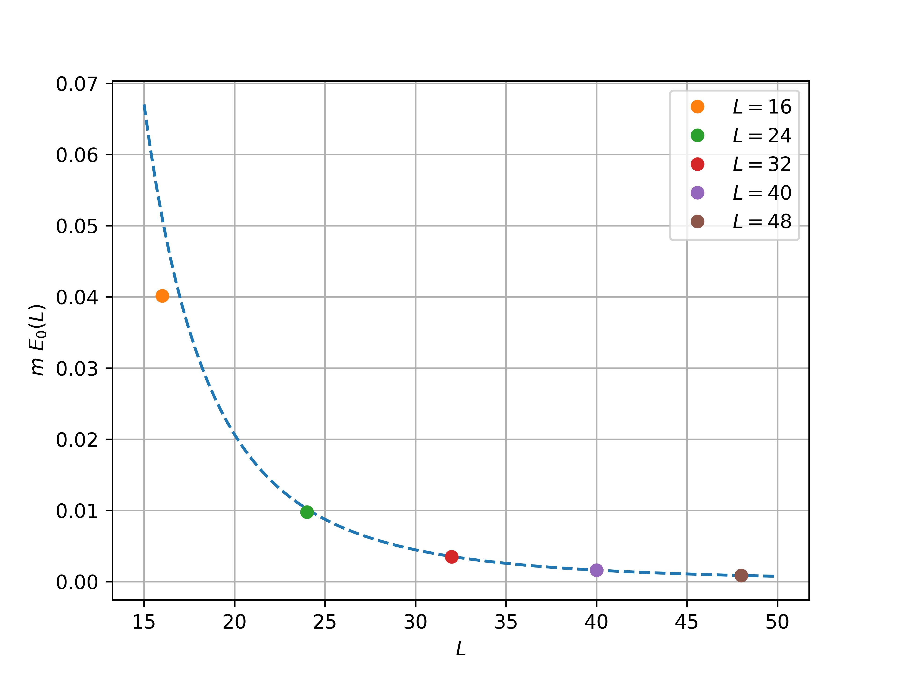
Note
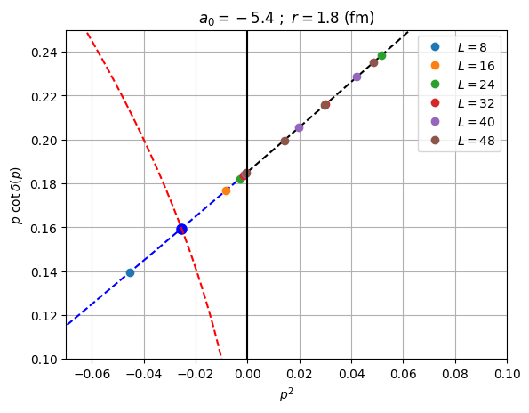
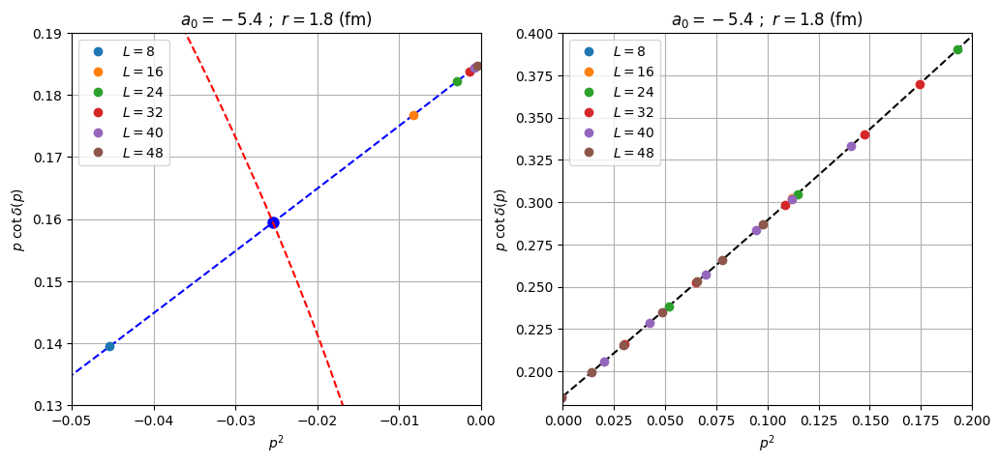
Virtual state has polynomial dependence on L just like a regular scattering state:
\scriptsize \begin{aligned} E_0(L) = \frac{4\pi a_0}{m L^3}\Big(&1 + 2.8372974794806\,\tfrac{a_0}{L} \\ &+ 6.375183165675\left(\tfrac{a_0}{L}\right)^2 \\ &+ 8.311950724058\left(\tfrac{a_0}{L}\right)^3 + 2\pi\,\tfrac{a_0^2 r}{L^3} + \dots\Big) \end{aligned}
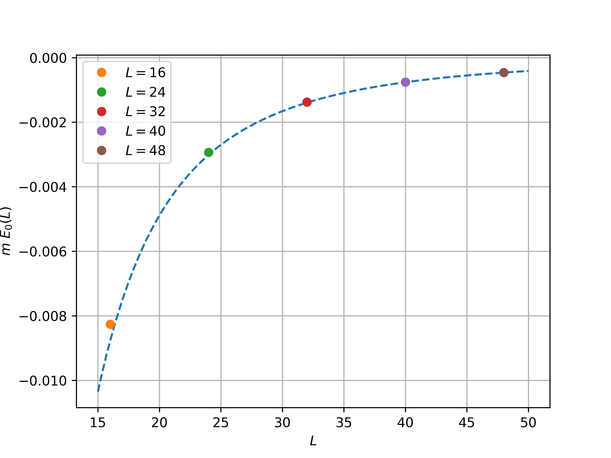
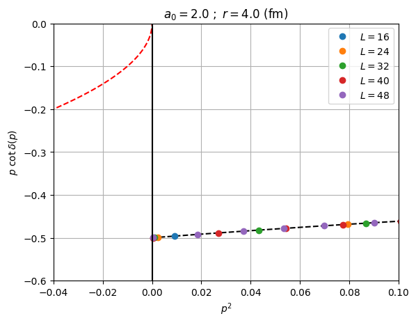
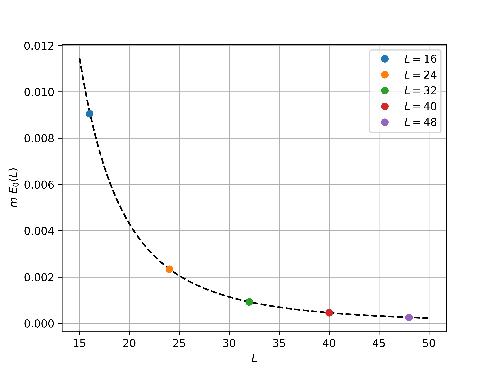
Finite-volume dependence of lowest scattering state
I will only consider s-wave scattering to keep life as simple as possible.
The “long-range” part is modeled by one-pion exchange (OPE)1
V^{l=0}_{\pi}(p',p) = -\frac{g^2}{4p'p}\log\left(\frac{(p+p')^2+\mu^2}{(p-p')^2+\mu^2}\right)
p^2 < -\mu^2/4
V^{l=0}_{\pi}(p',p) = \sum_{i,j}^{\infty} g_i(p') \lambda_{ij} g_j(p)\approx \sum_{i,j}^{N} g_i(p') \lambda_{ij} g_j(p)
The question is then: what is a good choice of basis functions g_i(p) (or form factors) that can reproduce the branch cut?
V_{\rm cut}(p',p)\equiv-\frac{g^2}{2\mu^2}\left[h(p')+h(p)\right] where h(p) = \frac{\mu^2}{4p^2} \log\left(\frac{4 p^2+\mu^2}{\mu^2}\right)
Properties of V_{\rm cut}(p',p)
Warning
V^{l=0}_{\pi}(p',p) = V_{\rm cut}(p',p) + \underbrace{V^{l=0}_{\pi}(p',p)-V_{\rm cut}(p',p)}_{\approx\sum_{i,j=2}^{N} g_i(p') \lambda_{ij} g_j(p)}
\begin{align} \hat V &= \hat V^{l=0}_\pi + \hat V_\delta \nonumber\\ &= \hat V_{\rm cut} + ( \hat V^{l=0}_\pi - \hat V_{\rm cut} ) + \hat V_\delta \nonumber\\ &= -\frac{g^2}{2\mu^2}\left[\hat h \hat\delta_\Lambda+ \hat\delta_\Lambda\hat h\right] + \sum_{i,j=2}^{N} \hat g_i \hat\delta_\Lambda \lambda_{ij}\hat g_j + \frac{4\pi a(\Lambda)}{m} \hat\delta_\Lambda\nonumber \end{align}
where \hat\delta_\Lambda is the regulated delta function defined as \langle p'| \hat\delta_\Lambda|p\rangle=\theta(\Lambda - p')\,\theta(\Lambda - p), and \hat h and \hat g_i are operators defined such that \hat h|p\rangle = h(p)|p\rangle and \hat g_i|p\rangle = g_i(p)|p\rangle.
I can rexpress this potential in rank-(N+1) form. I first define the vector of form factors \hat{\bf f} = (1,\hat h,\hat g_2,\ldots,\hat g_N). The potential is then \hat V = \hat{\bf f}^T {\hat\lambda} \hat{\bf f}, where \lambda is
{\hat \lambda} = \begin{pmatrix} \frac{4\pi a(\Lambda)}{m} & -\frac{g^2}{2\mu^2} & 0 & \cdots & 0 \\ -\frac{g^2}{2\mu^2} & 0 & 0 & \cdots & 0 \\ 0 & 0 & \lambda_{22} & \cdots & \lambda_{2N} \\ \vdots & \vdots & \vdots & \ddots & \vdots \\ 0 & 0 & \lambda_{N2} & \cdots & \lambda_{NN} \end{pmatrix}\ \hat\delta_\Lambda \, .
\hat T(E)=\hat V + \hat V \hat G_0(E) \hat T(E)
Assume
\hat T(E) = \hat{\bf f}^T \tau(E) \hat{\bf f}
and the beauty of separability comes into play:
\tau^{-1}(E) = \lambda^{-1} - \frac{1}{L^3}\sum_n^\Lambda f(p_n) G_0(p_n;E) f^T(p_n)
Quantization condition
\begin{align} \det\left[\lambda^{-1} - \frac{1}{L^3}\sum_n^\Lambda f(p_n) G_0(p_n;E) f^T(p_n)\right] &= \det\left[\lambda^{-1} - \frac{1}{L^3}\sum_n^\Lambda f\left(\frac{2\pi |n|}{L}\right) \frac{1}{E - \frac{4\pi^2 n^2}{mL^2} } f^T\left(\frac{2\pi |n|}{L}\right)\right]\nonumber\\ &=\det\left[\lambda^{-1} +\frac{m}{4\pi^2 L}\sum_n^\Lambda f\left(\frac{2\pi |n|}{L}\right) \frac{1}{n^2-\epsilon} f^T\left(\frac{2\pi |n|}{L}\right)\right]\nonumber = 0 \end{align}
This expression recovers the contact Lüscher formula Equation 1 in the limit N\to 1, h\to0, and g_i\to 0\ \forall\ i.
In this case we have f(p) = (1,h(p)) and \lambda = \begin{pmatrix} \frac{4\pi a(\Lambda)}{m} & -\frac{g^2}{2\mu^2} \\ -\frac{g^2}{2\mu^2} & 0 \end{pmatrix} \implies \lambda^{-1} = \begin{pmatrix} 0 & -\frac{2\mu^2}{g^2} \\ -\frac{2\mu^2}{g^2} & -\frac{4\mu^4}{g^4}\frac{4\pi a(\Lambda)}{m} \end{pmatrix}
and
\frac{m}{4\pi^2 L}\sum_n^\Lambda f\left(\frac{2\pi |n|}{L}\right) \frac{1}{n^2-\epsilon} f^T\left(\frac{2\pi |n|}{L}\right) = \frac{m}{4\pi^2 L}\sum_n^\Lambda \begin{pmatrix} \frac{1}{n^2-\epsilon} & \frac{h\left(2\pi |n|/L\right)}{n^2-\epsilon} \\ \frac{h\left(2\pi |n|/L\right)}{n^2-\epsilon} & \frac{h^2\left(2\pi |n|/L\right)}{n^2-\epsilon} \end{pmatrix}
So the quantization condition is explicitly
\det \begin{pmatrix} \frac{m}{4\pi^2 L}\sum_n^\Lambda \frac{1}{n^2-\epsilon} & -\frac{2\mu^2}{g^2} +\frac{m}{4\pi^2 L}\sum_n^\Lambda \frac{h\left(2\pi |n|/L\right)}{n^2-\epsilon} \\ -\frac{2\mu^2}{g^2} +\frac{m}{4\pi^2 L}\sum_n^\Lambda \frac{h\left(2\pi |n|/L\right)}{n^2-\epsilon}& -\frac{4\mu^4}{g^4}\frac{4\pi a(\Lambda)}{m}+\frac{m}{4\pi^2 L}\sum_n^\Lambda \frac{h^2\left(2\pi |n|/L\right)}{n^2-\epsilon} \end{pmatrix}=0
I find the following result
-\frac{1}{a}=\frac{g^4 \Lambda ^2 (mL)^2 S_2(\epsilon )}{1024 \pi ^7 L}-\frac{g^4 \Lambda (mL)^2 S_1(\epsilon ){}^2}{4096 \pi ^8 L}+\frac{g^4 \Lambda (mL)^2 S_0(\epsilon ) S_2(\epsilon )}{4096 \pi ^8 L}+\frac{g^2 \Lambda mL S_1(\epsilon )}{16 \pi^4 L}+\frac{S_0(\epsilon )}{\pi L}+\mathcal{O}(1/\Lambda)
where
\begin{align} S_0(\epsilon)&= \sum_{\vec n}^{n < \Lambda}\frac{1}{n^2-\epsilon} - 4\pi\Lambda \nonumber\\ S_1(\epsilon)&= \sum_{\vec n}^{n < \Lambda}\frac{1}{n^2-\epsilon}\frac{1}{n^2}\log\left(1+\left(\frac{4\pi}{\mu L}\right)^2 n^2\right)\nonumber\\ S_2(\epsilon)&= \sum_{\vec n}^{n < \Lambda}\frac{1}{n^2-\epsilon}\frac{1}{n^4}\log^2\left(1+\left(\frac{4\pi}{\mu L}\right)^2 n^2\right)\nonumber \end{align}